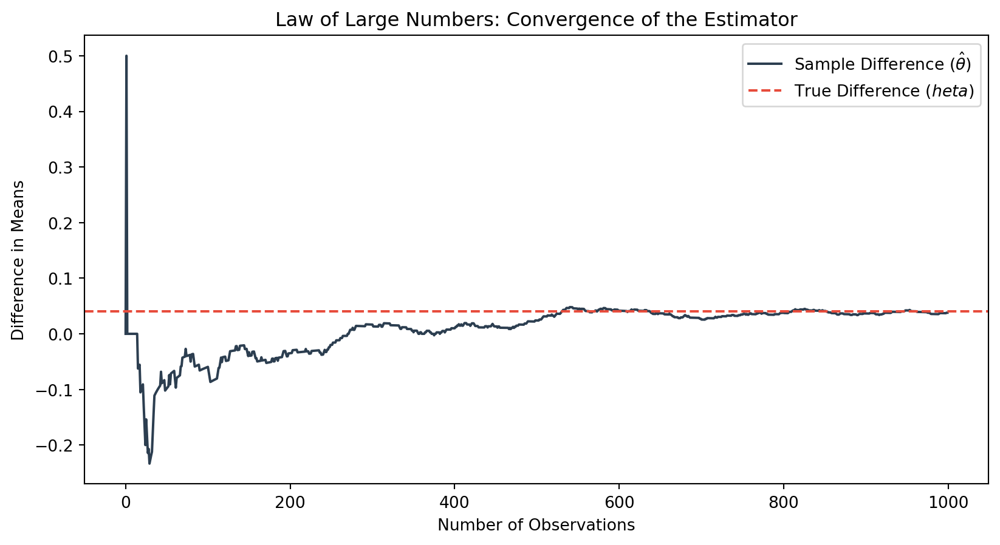
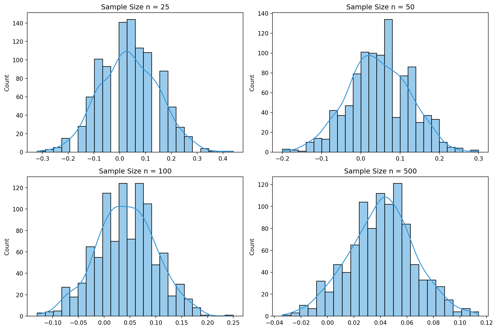

Using A/B Testing and Python to Optimize Digital CTAs
A/B Testing
Python
Rady MSBA
Author
Your Name
Published
April 14, 2026
Introduction
Imagine you’ve just launched a new landing page for your website. [cite_start]You have a prime spot for a newsletter sign-up, but you’re faced with a classic dilemma: which “Call to Action” (CTA) will actually get people to click? [cite: 2]
[cite_start]To solve this, we use an A/B Test—the gold standard of digital experimentation. [cite: 6] [cite_start]In this setup, visitors are randomly assigned to see one of two versions. [cite: 7] [cite_start]One group sees CTA A: “Sign up for our newsletter here!”, while the other sees CTA B: “Stay up to date by signing up!” [cite: 4] [cite_start]By comparing the sign-up rates, we move past guesswork and let the data decide. [cite: 8]
The A/B Test as a Statistical Problem
To analyze this rigorously, we treat every visitor’s decision as a random event. [cite_start]Since a visitor either signs up (1) or doesn’t (0), we model their outcome using a Bernoulli distribution. [cite: 9, 11]
[cite_start]We assume each group has its own underlying probability of success: [cite: 10] * \(\pi_A\): The true sign-up probability for CTA A. * \(\pi_B\): The true sign-up probability for CTA B.
[cite_start]The core metric we care about is the treatment effect, \(\theta = \pi_A - \pi_B\). [cite: 12] [cite_start]Since we cannot observe the true population parameters, we use the difference in sample means (\(\hat\theta = \bar{X}_A - \bar{X}_B\)) as our estimator. [cite: 13]
Simulating Data
[cite_start]In the real world, we never know the “true” values of \(\pi_A\) and \(\pi_B\). [cite: 15] [cite_start]However, for this simulation, we will set them ourselves to see if our statistics can actually “find” the truth. [cite: 15] [cite_start]Let’s assume CTA A is more effective with a 22% success rate, while CTA B has an 18% rate, giving us a true effect size of \(\theta = 0.04\). [cite: 16]
Code
import numpy as npimport pandas as pdimport matplotlib.pyplot as pltimport seaborn as snsfrom scipy import statsimport statsmodels.api as sm# Set seed for reproducibilitynp.random.seed(42)# Parameterspi_a, pi_b =0.22, 0.18n =1000# Simulate 1,000 Bernoulli draws for each groupgroup_a = np.random.binomial(1, pi_a, n)group_b = np.random.binomial(1, pi_b, n)
The Law of Large Numbers
The Law of Large Numbers (LLN) states that as a sample size grows, the sample mean converges to the population mean. For our A/B test, the LLN gives us confidence that \(\hat\theta\) will settle near the true 0.04 difference as we collect more data.
View LLN Plotting Code
diffs = group_a - group_brunning_mean = np.cumsum(diffs) / np.arange(1, n +1)plt.figure(figsize=(10, 5))plt.plot(running_mean, color='#2c3e50', label=r'Sample Difference ($\hat{\theta}$)')plt.axhline(y=0.04, color='#e74c3c', linestyle='--', label='True Difference ($\theta$)')plt.title("Law of Large Numbers: Convergence of the Estimator")plt.xlabel("Number of Observations")plt.ylabel("Difference in Means")plt.legend()plt.show()

The noisy start of small samples settles into the true difference of 0.04.
The plot above demonstrates this visually: we see a noisy average when only a few observations are included, which then settles down and converges toward the true difference of 0.04 as the sample size grows.
Precision: Bootstrapping Standard Errors
How precise is our estimate? Rather than relying solely on a formula, we use Bootstrapping—a resampling method that lets us estimate the variability of a statistic without a closed-form formula. We resample with replacement from our observed data many times and use the standard deviation of those resampled statistics as our estimate of the standard error.
Our Bootstrapped SE is {python} round(boot_se, 4), while our Analytical SE is {python} round(analytical_se, 4). Because they are so close, we can confidently use the bootstrapped error to construct a 95% confidence interval for \(\theta\).
The Central Limit Theorem (CLT)
The Central Limit Theorem (CLT) states that regardless of the shape of the underlying population distribution, the sampling distribution of the sample mean becomes approximately Normal as the sample size grows.

Observe that at small sample sizes, the histogram may look rough, but as \(n\) increases, the distribution of \(\hat\theta\) becomes smoother and more bell-shaped.
Hypothesis Testing & Regression
Using the CLT, we can perform a formal hypothesis test with a null hypothesis \(H_0: \theta = 0\). We standardize \(\hat\theta\) to form a test statistic, which follows a standard Normal distribution \(N(0,1)\).
This test is mathematically equivalent to a Simple Linear Regression. If we regress the outcome \(Y_i\) (sign-up) on an indicator \(D_i\) (treatment group), the coefficient \(\beta_1\) estimates our effect size \(\theta\).
The regression framework makes it easy to add controls or additional treatment arms while producing the same inference in simple cases.
The Problem with Peeking
Checking results early (peeking) is problematic because it inflates the Type I error rate. While a single test has a 5% false positive rate, multiple peeks provide multiple opportunities to incorrectly reject the null hypothesis.
In a simulation of 10,000 experiments where \(\pi_A = \pi_B = 0.20\) (the null is true), peeking 10 times resulted in a false positive rate significantly higher than the nominal 5%.
The Lesson: Set your sample size in advance and avoid peeking to maintain the integrity of your A/B test.